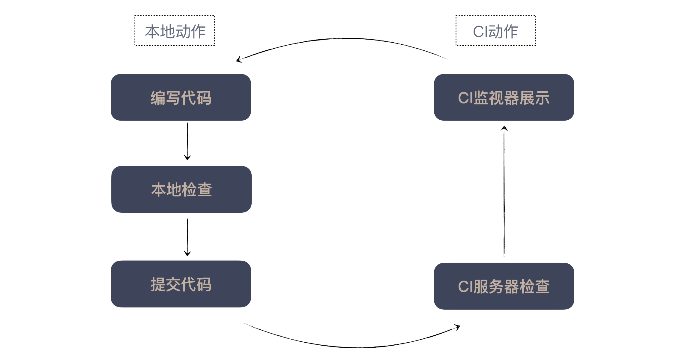

- 00 开篇词 程序员解决的问题，大多不是程序问题.md.html
- 01 10x程序员是如何思考的？.md.html
- 02 以终为始：如何让你的努力不白费？.md.html
- 03 DoD的价值：你完成了工作，为什么他们还不满意？.md.html
- 04 接到需求任务，你要先做哪件事？.md.html
- 05 持续集成：集成本身就是写代码的一个环节.md.html
- 06 精益创业：产品经理不靠谱，你该怎么办？.md.html
- 07 解决了很多技术问题，为什么你依然在“坑”里？.md.html
- 08 为什么说做事之前要先进行推演？.md.html
- 09 你的工作可以用数字衡量吗？.md.html
- 10 迭代0_ 启动开发之前，你应该准备什么？.md.html
- 11 向埃隆·马斯克学习任务分解.md.html
- 12 测试也是程序员的事吗？.md.html
- 13 先写测试，就是测试驱动开发吗？.md.html
- 14 大师级程序员的工作秘笈.md.html
- 15 一起练习：手把手带你分解任务.md.html
- 16 为什么你的测试不够好？.md.html
- 17 程序员也可以“砍”需求吗？.md.html
- 18 需求管理：太多人给你安排任务，怎么办？.md.html
- 19 如何用最小的代价做产品？.md.html
- 20 为什么世界和你的理解不一样？.md.html
- 21 你的代码为谁而写？.md.html
- 22 轻量级沟通：你总是在开会吗？.md.html
- 23 可视化：一种更为直观的沟通方式.md.html
- 24 快速反馈：为什么你们公司总是做不好持续集成？.md.html
- 25 开发中的问题一再出现，应该怎么办？.md.html
- 26 作为程序员，你也应该聆听用户声音.md.html
- 27 尽早暴露问题： 为什么被指责的总是你？.md.html
- 28 结构化：写文档也是一种学习方式.md.html
- 29 “懒惰”应该是所有程序员的骄傲.md.html
- 30 一个好的项目自动化应该是什么样子的？.md.html
- 31 程序员怎么学习运维知识？.md.html
- 32 持续交付：有持续集成就够了吗？.md.html
- 33 如何做好验收测试？.md.html
- 34 你的代码是怎么变混乱的？.md.html
- 35 总是在说MVC分层架构，但你真的理解分层吗？.md.html
- 36 为什么总有人觉得5万块钱可以做一个淘宝？.md.html
- 37 先做好DDD再谈微服务吧，那只是一种部署形式.md.html
- 38 新入职一家公司，怎么快速进入工作状态？.md.html
- 39 面对遗留系统，你应该这样做.md.html
- 40 我们应该如何保持竞争力？.md.html
- 划重点 “综合运用”主题内容的全盘回顾.md.html
- 划重点 “自动化”主题的重点内容回顾汇总.md.html
- 划重点 一次关于“沟通反馈”主题内容的复盘.md.html
- 划重点 关于“以终为始”，你要记住的9句话.md.html
- 划重点 关于“任务分解”，你要重点掌握哪些事？.md.html
- 加餐 你真的了解重构吗？.md.html
- 总复习 重新审视“最佳实践”.md.html
- 总复习 重新来“看书”.md.html
- 答疑解惑 如何分解一个你不了解的技术任务？.md.html
- 答疑解惑 如何在实际工作中推行新观念？.md.html
- 答疑解惑 如何管理你的上级？.md.html
- 答疑解惑 持续集成、持续交付，然后呢？.md.html
- 答疑解惑 持续集成，一条贯穿诸多实践的主线.md.html
- 结束语 少做事，才能更有效地工作.md.html
- 捐赠
24 快速反馈：为什么你们公司总是做不好持续集成？
你好，我是郑晔。
在“以终为始”那个模块，我们留下了一个巨大的尾巴。在“持续集成：集成本身就是写代码的一个环节”这篇文章中，我们是站在“以终为始”的角度阐述了集成，尤其是持续集成的重要性。
但怎么做好持续集成，才是很多人真正关心的内容。今天，我们就来谈谈如何做好持续集成。
既然我们打算讨论持续集成，不妨停下来先思考一个问题：你对持续集成的第一印象是什么。
持续集成？Jenkins？没错，很多人对持续集成第一印象都是持续集成服务器，也就是 CI 服务器，当年是 CruiseControl，今天换成了 Jenkins。
也正是因为如此，很多人就把 CI 服务器理解成了持续集成。我就曾经接触过这样的团队，他们恨不得把所有的事情都放在 CI 服务器上做：在 CI 服务器上做了编译，跑了代码检查，运行了单元测试，做了测试覆盖率的统计等等。
或许你会疑问，这有什么不对的吗？
在做软件这件事上，我们不会用对与错去衡量，我只能说，这种做法是可行的，但它不是最佳实践。我希望你去思考，有没有比这更好的做法呢？
想要回答这个问题，我们还是要回到持续集成的本质上去。持续集成的诞生，就是人们尝试缩短集成周期的结果。为什么要缩短周期呢？因为我们希望尽早得到反馈，知道自己的工作结果是否有效。
所以，想要做好持续集成，就需要顺应持续集成的本质：尽快得到工作反馈。
由此，我们便得到持续集成的关键点，你只要记住一句话，快速反馈。
快速反馈，这句分成两个部分，快速和反馈，这也就引出了持续集成的两个重要目标：怎样快速地得到反馈，以及什么样的反馈是有效的。
快速得到反馈
我们回到前面的例子上，把各种检查放到 CI 服务器上执行，它可以让我们知道代码是不是有问题，这是一个有效的反馈，但它的反馈够快速吗？虽然比起没有持续集成的状态，它是好很多。但是，我们需要问一个问题，能不能更快地得到反馈呢？
显然，我们还可以做得更快。在自己的开发机上执行这些检查，就会比在 CI 服务器快。也就是说，执行同样的操作，本地环境会快于 CI 服务器环境。
为什么会这样呢？我们先来看看所有检查在 CI 服务器上执行，每个程序员的动作是什么样的。
我们写好代码，然后需要提交代码，等待 CI 服务器运行检查结果，然后，用 CI 监视器查看执行结果。如果没问题，继续做下一个任务，如果有错误，修复错误，再执行同样的过程。
再来看看本地执行的动作。运行构建脚本，如果一切正确，你可以选择提交代码或是继续下一个任务，如果失败，立即修复。

对比之下，在本地运行这些检查，你不需要提交，不需要等 CI 服务器开始执行，不需要跑到额外的地方查看检查结果。所以，这个操作比提交到服务器上会快很多。
另外，这里还有一个关键点，我们的操作是连续的。一旦检查结果出错了，我们立刻进入修复环节。作为程序员，我们太了解连续操作的重要性了。这就像打游戏时，我们感觉不到时间流逝一般，有人把这种状态称之为“心流”。
而提交代码，等待 CI 服务器的检查结果，就等于强迫你停下来，你的心流就被打断了。
如果你对心流的概念感兴趣，可以去读米哈里·契克森米哈赖的著作《心流》，这位作者就是心流概念的提出者。
前面我们只是在说，你作为程序员个体，使用持续集成的效果，这只是为了简化讨论。接下来，我们向更真实的世界靠拢，引入另一个重要的因素：团队协作。
假设你的团队就是在 CI 服务器上执行检查。你兴高采烈地写完一段代码准备提交，结果，此时你隔壁的同事手快一筹，先提交了，你不得不停下来等他。如果很不幸，你同事的检查失败的话，那么他又要把它修复好，你等的时间就更长了。
一个小问题也就罢了，如果是个大问题，他可能要修很长一段时间。这个时候，你除了等待，也没有更好的选择。如此一来，大把的时间就被浪费掉了。
这里我们要“插播”持续集成中重要的一个提交纪律：只有 CI 服务器处于绿色的状态才能提交代码。有检查在运行不能提交，有错误不能提交。原因很简单，如果这个时候多个人提交了代码，检查失败了，那问题到底算谁的呢？
反之，如果一次只有一个人提交代码，责任是明确的。如果团队不大，这个纪律相对还好执行，提交之前看一眼，或是喊一声就可以了。
如果团队稍微有一点规模，可以用一个小东西当作令牌，谁拿到了谁来提交。如果真的有人在 CI 服务器还在运行的时候，提交了代码怎么办？很简单，谁提交谁负责，错了就他修，谁让他违反纪律了。
好，你已经理解了我说的重点：不能把检查只放到 CI 服务器上执行。那该怎么做呢？答案已经呼之欲出了，那就是在本地开发环境上执行。
想做好持续集成的一个关键点是，用好本地构建脚本（build script），保证各种各样的检查都可以在本地环境执行。
一旦有了构建脚本，你在 CI 服务器上的动作也简单了，就是调用这个脚本。也就是说，本地检查和 CI 服务器上的动作是一致的。
至于什么样的内容适合放在构建脚本里，这个话题我们先放一放，把它留到后续“自动化”模块再做讨论。
在“任务分解”模块中，我与你讨论了“小”动作在工作中的重要性，“小”动作完成得越快，工作反馈得到也越快，所以说，也只有坚持不懈地做“小”动作，才能缩短反馈周期。
现在我们把这个道理与持续集成结合起来理解，我们的工作流程就变成了这样：
每完成一个任务，在本地运行构建脚本，如果有问题，就修复；没问题，则可以同步代码。如果 CI 服务器上没有正在运行的服务，就可以提交代码了。

提交代码中最麻烦的动作，其实是合并代码。不过，因为我们做的是小任务，改动的代码量并不大，所以，即便有需要合并的代码，量也不会很大，所需的脑力以及工作时间都会少很多。如此一来，我们的开发效率才可能能真正得到提高。
当团队真正地实施起持续集成，你会发现随着时间增加，本地检查的时间会越来越长。原因有很多，比如，代码越来越多，测试也越来越多。总之，检查的时间长了，就会对集成的速度造成影响。
这个时候，本着快速反馈的理念，我们就必须想办法。比如，有的团队做了分布式测试运行，有的团队将测试分类，就是我们在测试金字塔中讲到的分类，在本地执行单元测试和集成测试，而把更复杂的系统测试放到 CI 服务器上运行。
简单来说，我们的目的就是快速地得到反馈。
得到有效的反馈
说完了“快速”，我们再来看看做好持续集成的第二个重点：反馈，也就是怎么得到有效的反馈。
为什么需要反馈，道理很简单，我们得知道自己做得对不对。你可能会问，根据前面的说法，如果本地和 CI 服务器上执行的是一样的脚本，我在本地通过了，还用关心 CI 服务器的反馈吗？
当然要。因为还会出现很多其他问题，比如说最简单的一种情况是，你漏提交了一个文件。
好，既然我们要关注CI 服务器的反馈，下一个问题就是，它怎么反馈给我们呢？
我们还是从一种常见的错误入手。有些团队做持续集成用的反馈方式是什么呢？答案是邮件。
以邮件进行反馈，问题出在哪里呢？很明显，邮件不是一种即时反馈的工具。
我不知道有多少人会把邮件客户端当作日常的工具，就我个人习惯而言，一天查看几次邮件就算不错了，如果以邮件作为反馈方式，很有可能是出错了很长时间，我都无知无觉。
我们前面一直在强调快速，需要的是即时反馈，一旦邮件成了持续集成链条中的一环，无论如何都快不起来。
那你可以怎么做呢？在前面各种讨论中，我其实已经透露了答案：持续集成监视器，也是 CI 监视器。
- （图片来源：CI 监视器的示例 projectmonitor）
CI 监视器的原理很简单，CI 服务器在构建完之后，会把结果以API的方式暴露出来，早期有RSS和ATOM格式，后来有JSON的格式。得到的结果就可以用不同的方式进行展现了。市面上有很多CI 监视器的软件，有的是拿到结果之后，做一个视觉呈现，有的是做桌面通知。
现在，我们终于要讲到这个部分的重点了：怎么呈现是有效的？
答案很简单：怎么引人注目，怎么呈现。
比如，很多团队的做法是，用一个大屏幕将持续集成的结果展示出来，这样一来，持续集成的结果所有人都能看到，一旦出错了，即便你一时疏忽，也会有人来提醒你。
还有一些感官刺激的做法，比如，有人用上了红绿灯，测试失败则红灯闪烁；还有人甚至配上了语音，用喇叭高喊：“测试失败了，请赶紧修复。”我在一个视频里见过一个更夸张的做法：有人用玩具枪，出错了，就瞄准提交者开上一枪。
你是聪明的程序员，你应该能想到更多有趣的玩法。
为什么要这么做呢？这里的重点是，想做好持续集成，需要整个团队都关注持续集成。
这些引人注目的做法，就是要提高持续集成的关注度。否则，即便持续集成的技术环节做得再出色，人的注意力不在，持续集成也很难起到作用。
所以，你看到了，持续集成的反馈，尤其是出错之后的反馈方式，几乎是所有实践中最为高调的，它的目的就是要引人注目。
这里再插播一条持续集成的纪律：CI 服务器一旦检查出错，要立即修复。原因很简单，你不修，别人就不能提交，很多人的工作就会因此停顿下来，团队的工作流就会被打断，耽误的是整个团队的工作。
如果你一时半会修不好怎么办，撤销你的提交。更关键的原因是，团队对于持续集成的重视度，长时间不修复，持续集成就失去了意义，人们就会放弃它，持续集成在你的项目中，也就发挥不出任何作用了。
总结时刻
持续集成是软件开发中的重要实践，做好持续集成的关键在于，快速反馈。这里面有两个目标，怎样快速地得到反馈，以及什么样的反馈是有效的。
做好快速反馈，要把本地能做好的事情，在本地做好；也要通过小步提交的方式，加快代码开发的节奏。什么是有效的反馈？一是即时的反馈，二是引人注目的反馈。有很多种持续集成相关的工具可以帮助我们达成有效的反馈。
想要做好持续集成，还要有一些纪律要遵循：
- 只有 CI 服务器处于绿色的状态才能提交代码；
- CI 服务器一旦检查出错，要立即修复。
如果今天的内容你只能记住一件事，那请记住：做好持续集成的关键在于，快速反馈。
最后，我想请你分享一下，你的团队做持续集成吗？遇到过哪些困难呢？欢迎留言与我们分享。
感谢阅读，如果你觉得这篇文章对你有帮助的话，也欢迎把它分享给你的朋友。
© 2019 - 2023 Liangliang Lee. Powered by gin and hexo-theme-book.